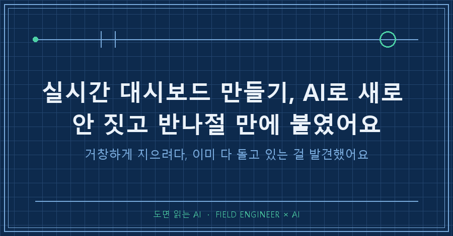
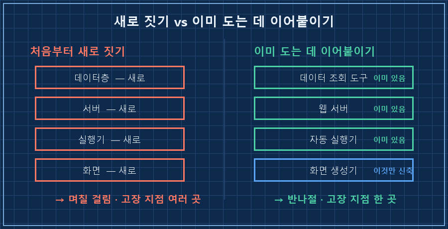
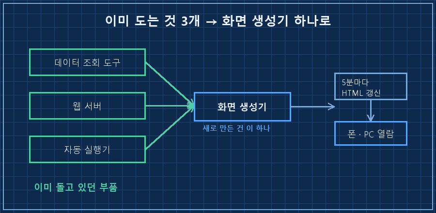
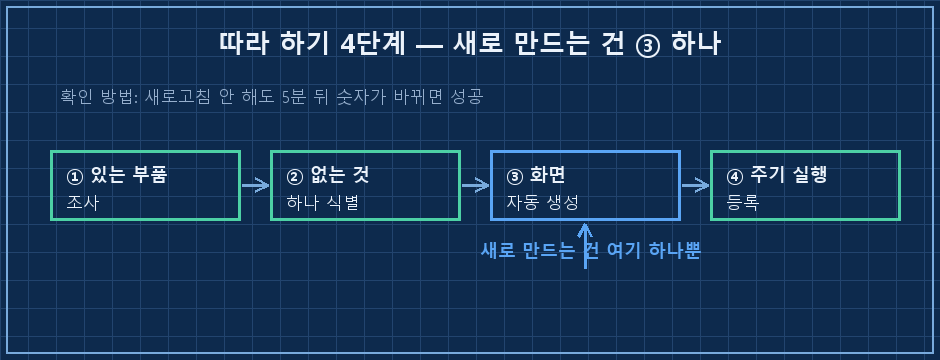

먼저 답부터 정리할게요.
실시간 대시보드 만들기는 처음부터 다 새로 짓는 게 아니에요.
이미 돌고 있는 자동화들이 뱉어내는 데이터를, 화면 하나로 모으기만 하면 됩니다.
저는 며칠짜리 공사인 줄 알고 덤볐다가, 필요한 부품이 이미 다 제 PC에서 돌고 있다는 걸 뒤늦게 알았어요. 그래서 반나절 만에 끝났습니다.
저는 수소 설비 제어를 15년 한 엔지니어예요.
판넬 설계하고, PLC 로직 짜고, 현장 나가 커미셔닝하는 게 본업이고요.
자동화 스크립트는 그 일을 좀 편하게 하려고 곁다리로 짜는데, 요즘은 그 곁다리를 AI랑 같이 합니다.
1. "지금 잘 돌고 있나"를 한눈에 보고 싶었어요
제 PC에선 매일 자동으로 도는 스크립트가 여러 개예요.
새벽에 브리핑을 만들고, 상태를 점검하고, 기록을 정리하고.
근데 이게 잘 도는지, 어디서 멈췄는지를 확인하려면 매번 폴더랑 로그를 하나씩 열어봐야 했어요.
설비로 치면 감시 화면이 없는 거죠.
현장 엔지니어는 SCADA 화면 하나로 설비 상태를 다 보잖아요. 그게 제 자동화엔 없었던 거예요.
그래서 "실시간으로 한눈에 보는 화면"이 갖고 싶어졌습니다.
문제는 그다음이었어요.
머릿속에 그려진 그림이 너무 거창했거든요.
실시간 통신 서버 세우고, 화면 프레임워크 붙이고, 데이터베이스 새로 파고..
딱 봐도 며칠짜리 공사였어요. 이게 바로 빌드 과잉의 냄새였습니다.
2. 새로 짓기 전에, 이미 뭐가 도는지부터 뒤졌어요
여기서 순서를 바꿨어요.
설계도 그리기 전에, AI한테 제 시스템을 통째로 조사시켰습니다.
"지금 이미 돌고 있는 것 중에, 이 대시보드에 쓸 수 있는 게 뭐가 있냐"고요.
결과가 좀 어이없었어요.
[이미 돌고 있던 것]
· 데이터 조회 도구 : 예전에 만들어 둔 상태·기록 조회 기능 → 있음
· 웹 서버 : 폰으로 접속하려고 띄워 둔 서버 → 있음
· 자동 실행기 : 스크립트를 정해진 시각에 돌리는 스케줄러 → 있음
[정말로 새로 만들어야 할 것]
· 위 데이터를 긁어다 한 화면으로 그리는 "화면 생성기" → 이거 하나뿐지으려던 부품이 대부분 이미 있었어요.
데이터를 꺼내는 도구도, 밖에서 접속할 서버도, 정해진 시각에 뭔가를 돌리는 기능도 전부요.
없는 건 딱 하나, 그걸 긁어다 한 장으로 그려주는 화면이었습니다.

3. 그래서 새로 만든 건 화면 한 개뿐이에요
만든 건 결국 스크립트 하나였어요.
이미 있는 도구들에서 데이터를 긁어와서, 다크 테마 HTML 한 장으로 그려주는 생성기요.
건강 점수, 자원 상태, 스케줄러 목록, 최근 에러, 활동 타임라인.. 이런 걸 10칸짜리 격자에 뿌렸어요.
'실시간'이라고 실시간 통신까지 붙이진 않았어요.
그건 이 목적엔 과잉이거든요.
그냥 5분마다 화면을 통째로 다시 그리게 했어요. 브라우저는 5분마다 알아서 새로고침되고요.
설비 감시 화면도 초 단위로 안 봐요. 상태만 놓치지 않으면 되니까요.
서버는 클라우드가 아니라 제 노트북에 뒀어요.
이건 취향이 아니라 조건이었는데, 다루는 자료가 회사 업무와 얽혀 있어서 밖으로 못 내보내거든요.
그리고 클라우드에 올리면 유지비도 계속 나가고요. 로컬이면 둘 다 해결이었습니다.

4. 딱 하나 걸린 삽질, 스케줄러 등록
순탄하진 않았어요.
5분마다 자동으로 돌리려고 윈도우 작업 스케줄러에 걸었는데, 등록 명령이 자꾸 튕겼어요.
원인은 경로였습니다. 폴더 경로에 한글이랑 공백이 섞여 있으니까, 명령어가 중간에서 잘려 나갔던 거예요.
> schtasks /create /tr "python C:\...\내 폴더\gen_dashboard.py" ...
ERROR: 잘못된 인수입니다 (경로가 공백에서 끊김)
# 해결: 파서에게 "여기서부터는 건드리지 마"라고 지시하는
# 정지 토큰(--%)을 앞에 붙여 경로를 통째로 넘김이런 건 제가 외워서 아는 게 아니라, 에러 메시지를 그대로 AI한테 던지고 같이 잡았어요.
그 밖에 자원 상태를 읽는 라이브러리 하나가 설치가 안 돼 있어서 한 번 더 걸렸고요.
그 두 개만 넘기니, 반나절 만에 폰에서도 대시보드가 열렸습니다.
그대로 따라 할 수 있게 4단계로
전제조건: 이미 주기적으로 도는 자동화 몇 개(데이터를 남기는 것), 파이썬, 결과를 볼 브라우저. 이게 2026년 7월 기준 제가 쓴 최소 준비물이에요.
1. 있는 부품 조사 — 데이터를 꺼낼 방법, 화면을 띄울 서버, 정해진 시각에 돌릴 실행기가 이미 있는지부터 뒤진다. 놀랄 만큼 이미 있는 경우가 많아요.
2. 없는 것 하나만 식별 — 대개 "데이터를 긁어 화면으로 그리는 생성기" 하나예요. 새로 만들 건 여기 집중.
3. 화면 자동 생성 — 데이터를 긁어와 HTML 한 장으로 뿌린다. 실시간 통신은 대부분 필요 없어요.
4. 주기 실행 등록 — 스케줄러로 5분마다 다시 그리게 건다. 경로에 한글·공백 있으면 정지 토큰 처리.
확인 방법: 브라우저를 직접 새로고침하지 않아도, 5분 뒤에 화면 속 숫자가 저절로 바뀌어 있으면 성공이에요.

새로 짓기 vs 이어붙이기, 뭐가 다른가
| 항목 | 처음부터 새로 짓기 | 이미 도는 데 이어붙이기 |
|---|---|---|
| 걸린 시간 | 며칠 | 반나절 |
| 새로 만든 부품 | 데이터·서버·실행기·화면 전부 | 화면 생성기 1개 |
| 고장 지점 | 여러 곳 | 화면 한 곳 |
| 기존 시스템 | 건드림(위험) | 읽기만(안전) |
저는 기존에 돌던 건 한 줄도 안 고쳤어요.
전부 읽기만 하고, 새 화면 하나만 얹었거든요.
그래서 이 대시보드가 잘못돼도 원래 자동화들은 멀쩡해요. 이게 이어붙이기의 진짜 이점이에요.
자주 묻는 질문
Q. 5분마다 갱신이면 '실시간'이 아니지 않나요?
맞아요, 엄밀히는 준실시간이죠. 근데 감시가 목적이면 그게 정답이에요. 초 단위 통신은 만들기도 어렵고 고장도 잘 나요. "멈춘 걸 몇 분 안에 알아채는 것"이 목표라면 5분 배치로 충분합니다. 목적에 맞는 최소치를 고르는 게 핵심이에요.
Q. 저는 이미 도는 부품이 하나도 없는데요?
그럼 순서대로 하나씩 만들면 돼요. 다만 그 경우에도 조사부터 하세요. "새로 짓겠다"고 마음먹은 순간엔 이미 있는 걸 못 봐요. 저도 조사를 건너뛰었으면 며칠을 날렸을 거예요. 짓기 전에 뒤지는 30분이 며칠을 아껴줍니다.
돌아보면 이번에 배운 건 기술이 아니라 순서였어요.
"만들고 싶다"가 들면, 손이 먼저 나가기 전에 "이미 뭐가 도는지"를 뒤지는 것.
새 시스템의 절반은 대개 이미 내 안에서 돌아가고 있더라고요.
다음 글에서는 이 화면에 '보기'만 말고, 폰에서 명령까지 넣는 단계를 붙인 얘기를 풀어볼게요.
이렇게 만들다 만 것, 이어붙인 것 전부 [makefield.ai](https://makefield.ai)에 풀어놓고 있어요.
---
태그: #실시간대시보드만들기 #모니터링대시보드만들기 #파이썬대시보드자동화 #시스템관제화면 #자동화모니터링 #AI자동화 #현장엔지니어 #제조업AI #빌드과잉 #대시보드만드는법 #파이썬자동화 #작업스케줄러 #HTML대시보드 #AI실무 #도면읽는AI